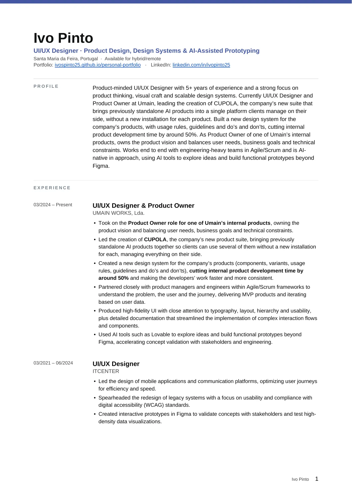
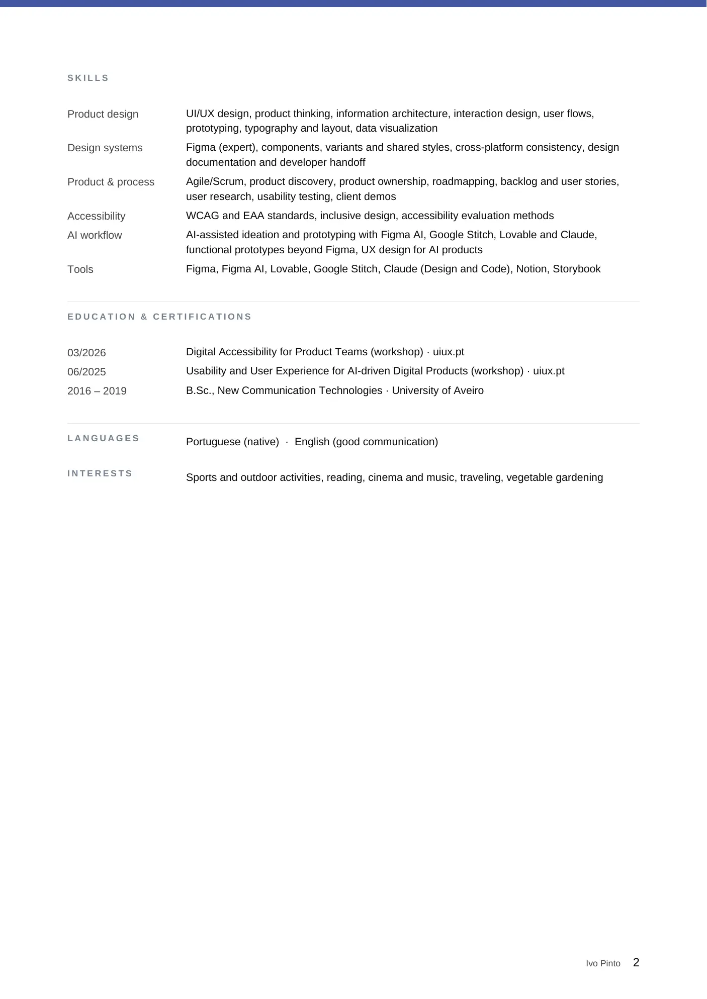

CV
CV
Product Designer with 5+ years of experience in product design, design systems and AI prototyping.
Preview
2 pages · in English

For a version with selectable text and links, download the PDF.
CV
Product Designer with 5+ years of experience in product design, design systems and AI prototyping.


For a version with selectable text and links, download the PDF.